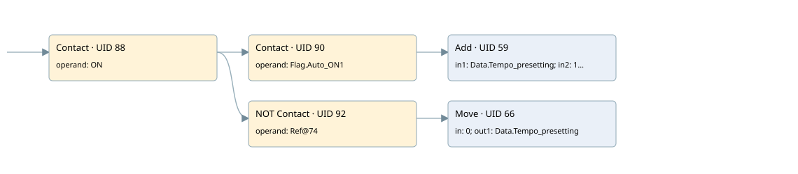

increment seconds count
auto start motors · 검색 색인 순서 1 · 원본 내부 NID 추정 1
백업 PLF 원본의 2658556 바이트 위치에서 복원한 XML. 검색 문서 1841의 객체 키 16102200c110000000000000와 연결했다. 이름 해석 7/8개. 남은 RefId는 상수 또는 미해석 참조다.
연결 구조 다시 그리기
원본 Part/PCon/Wire를 이용한 연결도다. TIA 화면의 래더 배치 또는 실행 결과를 재현한 그림은 아니다. 핀 연결은 아래 표와 원본 XML을 기준으로 읽는다. 노드 위에 마우스를 두면 피연산자 이름을 볼 수 있다.

접점·코일·블록과 피연산자
| Part UID | Gate | Negated 핀 | 연결 피연산자 |
|---|---|---|---|
| 88 | Contact | operand = ON | |
| 90 | Contact | operand = Flag.Auto_ON1 | |
| 59 | Add | in1 = Data.Tempo_presetting; in2 = 1; out = Data.Tempo_presetting | |
| 92 | Contact | operand | operand = RefId 4 / ORef UID 74 |
| 66 | Move | in = 0; out1 = Data.Tempo_presetting |
접점 경로를 펼친 조건식
Contact·O/A·비교기의 원본 연결을 읽기 쉽게 펼친 보조 해석이다. POWER는 전원 레일 시작을 뜻한다. 호출 블록·에지·타이머의 내부 동작과 다중 쓰기 순서는 이 표로 실행 검증하지 않았다. 미해석 핀과 RefId는 원문 연결표에서 확인한다.
| UID | 동작 | 대상 | 원본 접점 경로 | 내용 |
|---|---|---|---|---|
| 66 | Move | Data.Tempo_presetting | (ON AND NOT [ORef UID 74]) | Move 입력 0 |
원본 배선 연결
| Wire UID | 동일 Wire 연결 끝점 |
|---|---|
| 94 | Powerrail {} ↔ Part 88.in |
| 77 | ORef 69 (ON) ↔ Part 88.operand |
| 89 | Part 88.out ↔ Part 90.in ↔ Part 92.in |
| 78 | ORef 70 (Flag.Auto_ON1) ↔ Part 90.operand |
| 91 | Part 90.out ↔ Part 59.en |
| 80 | ORef 71 (Data.Tempo_presetting) ↔ Part 59.in1 |
| 81 | ORef 72 (1) ↔ Part 59.in2 |
| 82 | Part 59.out ↔ ORef 73 (Data.Tempo_presetting) |
| 83 | ORef 74 (RefId 4) ↔ Part 92.operand |
| 93 | Part 92.out ↔ Part 66.en |
| 85 | ORef 75 (0) ↔ Part 66.in |
| 86 | Part 66.out1 ↔ ORef 76 (Data.Tempo_presetting) |
식별자 해석 근거 8개
| ORef UID | RefId | 이름 | IdentXmlPart 파일 | 해석 방법 |
|---|---|---|---|---|
| 69 | 1 | ON | 0575-IdentXmlPart.xml | UID/RID + search-text + NID agreement |
| 70 | 4 | Flag.Auto_ON1 | 0577-IdentXmlPart.xml | UID/RID + search-text + NID agreement |
| 71 | 7 | Data.Tempo_presetting | 0577-IdentXmlPart.xml | UID/RID + search-text + NID agreement |
| 72 | 8 | 1 | 0578-IdentXmlPart.xml | literal candidate: UID/RID/NID + nearby named declarations + search-text agreement |
| 73 | 7 | Data.Tempo_presetting | 0577-IdentXmlPart.xml | UID/RID + search-text + NID agreement |
| 74 | 4 | 미해석 RefId | 식별 선언 원본 참조 | 미해석 |
| 75 | 10 | 0 | 0578-IdentXmlPart.xml | literal candidate: UID/RID/NID + nearby named declarations + search-text agreement |
| 76 | 7 | Data.Tempo_presetting | 0577-IdentXmlPart.xml | UID/RID + search-text + NID agreement |
검색 코드 보조 자료
참조 명칭을 찾기 위한 자료이며 실행 순서나 AND/OR 관계는 위 연결표로 확인한다.
"on" "flag".auto_on1 add "data".tempo_presetting 1 "flag".auto_on1 move 0 "data".tempo_presetting "data".tempo_presetting